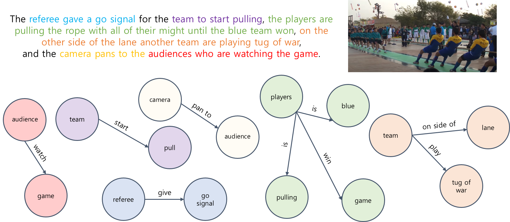
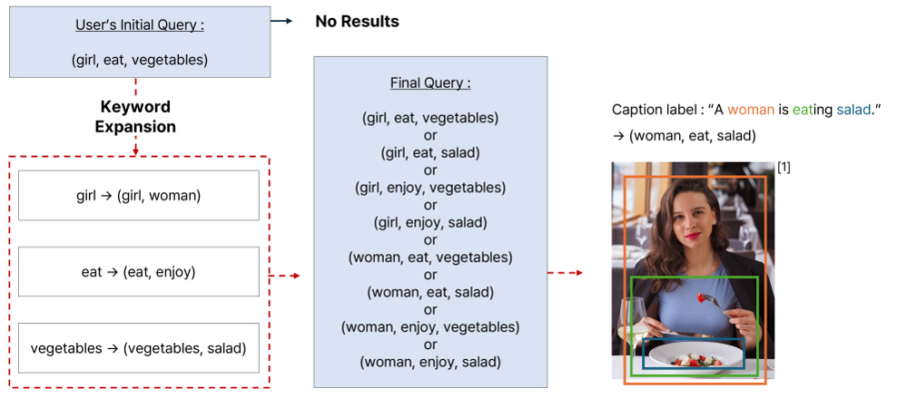
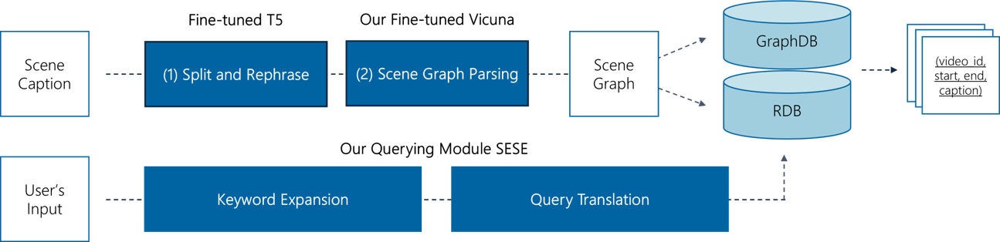

관계기반형 질의를 통한 장면 검색
Scene Retrieval Using Relate-based Queries
Python
SQL
Text
Video
DB
Fine-tuning
관계 정보가 포함된 질문을 통해 검색 의도에 맞는 장면을 찾는 모듈입니다.
⭐프로젝트 소개
- 주관: 한국전자통신연구원(ETRI) 시각지능연구실
- 기간: 2023. 03 - 2023. 11
- 프로젝트명: 관계 정보의 장기 시각 기억 저장 및 관리 기술 개발
- 한 줄 소개: 사용자의 검색 의도에 부합하는 장면을 찾기 위해, 질문의 관계정보를 파악하고 유사어를 확인합니다.
💎왜 이 프로젝트가 중요한가?
비디오 데이터의 관계 정보
- 비디오는 수많은 객체 간 상호작용(관계 정보)을 포함하고 있으며, 이러한 관계 정보는 장면의 의미를 해석하는 데에 매우 중요합니다.
- 예를 들어, 고양이를 쫓는 쥐와 쥐를 쫓는 고양이는 매우 다른 장면을 표현합니다.
- 이러한 관계 정보를 유실하지 않고 장면의 의미를 보존하기 위해 graph 데이터를 활용할 필요가 있습니다.
목표
- 본 프로젝트는 관계 정보를 Graph 데이터로 변환하여 GraphDB에 저장함으로써 장면 의미 보존과 검색의 용이성을 확보하는 것을 목표로 합니다.
🔎핵심 기술은 무엇인가?
Scene graph parsing model
- 이미지 캡션을 scene graph로 변환하기 위해 두 가지 주요 과정을 사용하였습니다.
- Split and Rephrase: t5 기반 fine-tuned 모델을 사용해 캡션을 의미 단위로 분해
- 사용 모델:
unikei/t5-base-split-and-rephrase
- Scene Graph Parsing: 각 문장을 scene graph로 변환하기 위해
Vicuna-7b모델을 FACTUAL dataset으로 LoRA instruction fine-tuning하여 사용
Vicuna-7b모델: 오픈소스 언어 모델로, MMLU 평가에서 뛰어난 성능을 보입니다.- MMLU: 모델이 사전 학습 동안 습득한 지식을 평가하는 지표
- FACTUAL Dataset: Visual Genome dataset을 가공하여 만든 scene graph parsing benchmark dataset
Scene graph parsing 결과 예제 
💡어떠한 사고방식/생각을 거쳤는가?
문제 인식
- 관계 기반 데이터를 효과적으로 저장하고 검색하기 위해 GraphDB를 사용해야 했지만, GraphDB는 유사어 검색이 되지 않으므로 단어 일치가 정확히 이루어져야 합니다.
- 예를 들어, ’샐러드’와 ’야채’처럼 의미론적으로 유사한 단어라도 정확히 일치하지 않으면 검색에서 누락될 수 있습니다.
해결 아이디어
- 유사어 확장을 위해 자연어 임베딩 모델을 활용해 corpus 기반의 유사어 사전을 구축했습니다.
- 임베딩 모델 활용: Word2Vec 모델을 사용해 dataset corpus를 학습하여, 의미적으로 유사한 단어들을 그룹화하고 유사어 확장 기능을 구현했습니다.
- 임베딩 모델의 장점: 단어들을 한 공간에 Mapping하여 의미론적 유사성을 비교할 수 있습니다.

🌄어떠한 시행착오를 겪었는가?
문제 발견
- 처음에는 대규모 외부 코퍼스를 활용해 Word2Vec 모델을 학습했으나, 결과적으로 비디오 데이터베이스에 없는 단어들까지 확장되는 문제가 발생했습니다.
- 이로 인해 검색 속도가 느려지고, 반복 검색이 발생하였습니다.
해결 방법
- 검색에 최적화하기 위해, 현재 비디오 데이터베이스의 dataset만 사용하여 Word2Vec 모델을 학습함으로써 검색의 정확도와 효율성을 높였습니다.
🧶 부록
- 사용 코드: github
파이프라인
